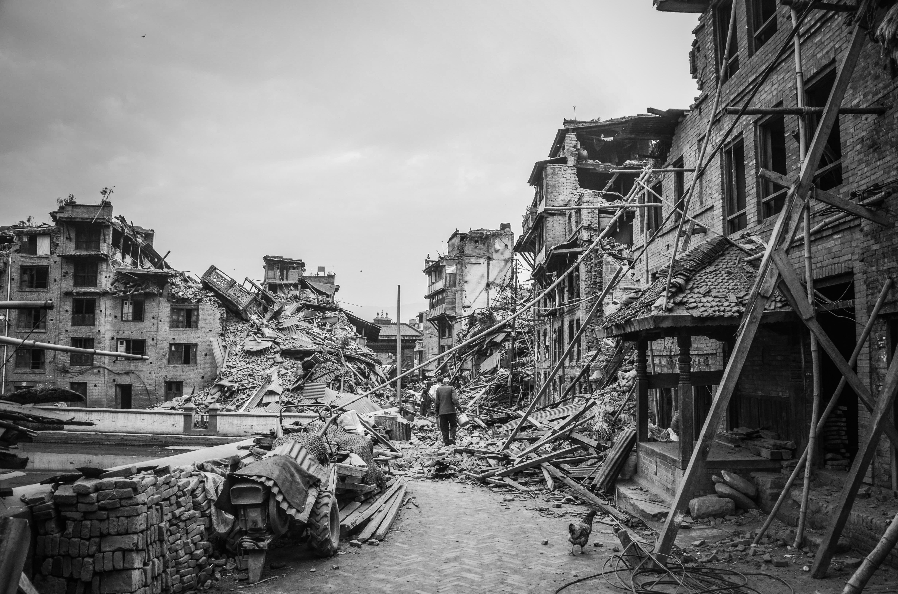

A tsunami is a series of waves in a water body caused by the
displacement of a large volume of water, generally in an ocean
or a large lake.
FLOOD
A flood is an overflow of water on land. Sometimes a river might
receive extra water, either from heavy rains or other natural
disasters. When this happens, the water overflows from its
normal path in the river bed and onto the dry land.
CLOUDBURST
A cloudburst is an extreme amount of precipitation in a short
period of time, sometimes accompanied by hail and thunder, which
is capable of creating flood conditions.
CYCLONES
Cyclones are violent Storms with an intense spiral and
accompanied by strong winds and heavy rains. They are caused due
to strong winds blowing around the central area having low
atmospheric pressure.

EARTHQUAKES
An earthquake is the shaking of the surface of the earth due to
the sudden release of energy in the earth's crust. As a result,
seismic waves (also known as S waves) are created.
LANDSLIDE
A landslide is defined as the movement of a mass of rock,
debris, or earth down a slope.